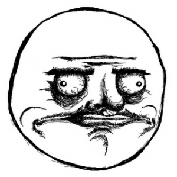
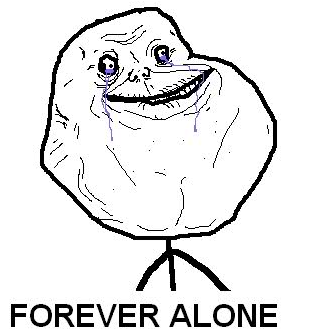
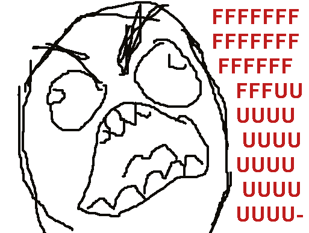

Me Gusta – один из самых интересных фейсов, поскольку смысл его не лежит на поверхности, а известен лишь части аудитории. Обычно эта ухмыляющаяся рожа используется в комиксах для выражения удовлетворения от чего-то омерзительного и извращенного, принято также считать Me Gusta Face рожей извращенца. Да вы только посмотрите на этот фейс, настоящий упырь!

Me Gusta в переводе с испанского означает мне нравится. Да, именно так испанцы говорят, когда хотят поделиться своим удовлетворением от вкусной еды или мастурбации. Поскольку изначально мем Me Gusta относился исключительно к половым извращениям, то принято считать эту фразу слегка ехидной, о том же напоминает и ухмылка фейса. На лице читается, что ему очень хорошо от просмотра детской порнографии или даже копрофагии. Фу, конечно же, как так можно!
Впервые фейс Forever alone появился где-то в 2010 году на зарубежных имиджбордах в одном из fffuuu комиксов, хотя ходят слухи, что рожа эта гуляла по сети и раньше, что, в общем-то, выглядит вполне реально.

Forever alone – очень популярный фейс, который стал мемом, и который с огромной скоростью распростроняется по соцсетям. Комиксы с Forever alone захватывают ВК, чаны и умы одиноких школьников и студентов, которые никогда не перестанут быть одинокими. Перевод Forever alone – всегда один, с английского, если кто не понял. Тут речь идет об одиноком парне, у которого никогда не будет девушки, друзей… В общем-то, теперь Forever alone слало именем нарицательным, да и сам фейс так и называют – Forever alone face.
Fuck Yea или Fuck Yeah (второй вариант грамматически более правильный, поэтому стоит использовать первый вариант) – мем, родившийся в начале 2010 года как антипод FFFUUU и нашедший свою частичку популярности. Идея проста: Fuck Yea Guy совершает ряд действий (в комиксе) и в итоге становится очень довольным результатом. Впрочем, не всегда он сам что-то для этого предпринимает.
Fuck Yea – это, вообще-то, возглас, обозначающий радость, что-то типа «да бл!» Соответственно, с совокуплением эта фраза не связана. Конечно, сисьема образования в этой стране работает хорошо, но все же чуть более половины всех соотечественников – те еще дебилы, а уж школьники, среди которых широко распространен этот мем, вообще ни о чем другом и не думают, как о сексе, а потому и комиксы рисуют неправильные. Вообще, комиксы школьников вызывают Хьюстон…
Fffuuu (а также fuuu, ffffuuuu, fuuuuu и так далее) – это очень известный джедайский мем, который был рожден на форчане (ну кто бы сомневался), и получил широчайшее распространение по всему миру и в этой стране в частности. Обычно используется в виде fffuuu комиксов, состоящих из четырех (необязательно, можно и двух, и десяти) частей, в итоге завершающихся поражающей воображение и захватывающей мозг картинкой м мужиком, во все горло орущим ffffuuuu! Вот таким вот:

Но давайте для начала вспомним историю возникновения мема fffuuu и fffuuu комиксов. Жил был анонимус, окторый очень сильно переживал из-за того, что когда он какал в туалете, какаха плюхалась в воду и обильными брызгами забрызгивала его задницу. Он так сильно парился по этому поводу, что написал об этом тред на форчане.